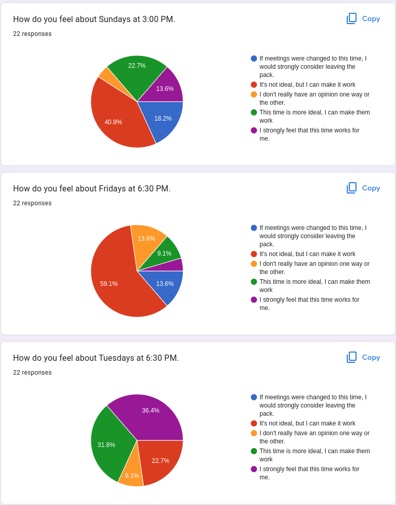

Old Announcements
March 19, 2024
April 2nd now on the calendar is a parent meeting.(Another date to be announced soon). We are encouraging all parents to attend as we are planning the activities for the next 6 months and want to scope the program to what all parents want.- GOLD training April 6-7. The pack needs at least two GOLD trained leaders for each camping trip or the pack cannot camp. It's a good idea to have at least three trained leaders at every event just in case there is an emergency (otherwise all scouts have to go home without the two leaders!)
- Scout Show April 13th This is a fun event where we showcase scout skills to the wider community. A sign-up genius will go out with shifts!
- Fossil hunting trip planned for April 27th. We are also exploring the option of camping that weekend at Allaire State Park. What do you think? Tell us at the parent meeting.
- Hook Arrow Shell will be our next camping trip after that May 17th up at Camp Citta in Barnegat NJ.
{kind=link}
March 12, 2024
- Requirements to be completed at home are listed here. These must be reported to Becky or Nelson, otherwise your scout can not earn their next rank.
- This Saturday, March 16, all current 76 scouts are eligible for Southern Shore District Pinewood Derby. Race times are available here. See the website for location information and rules.
- GOLD training April 6-7. The pack needs at least two GOLD trained leaders for each camping trip or the pack cannot camp. It's a good idea to have at least three trained leaders at every event just in case there is an emergency (otherwise all scouts have to go home without the two leaders!)
- Scout Show April 13th This is a fun event where we showcase scout skills to the wider community. A sign-up genius will go out with shifts!
- April 27th will be a Fossil Hike! Details to be announced soon!
Feb 20, 2024
- Pinwood Derby March 1st! We will be weighing cars and checking cars in February 27th. If you would like to purchase a meal that can be done tonight, February 27th, or online at the Pinewood Derby Event Page. We could use some volunteers who can show up early for setup. Arrive at 2PM if you have any availability. We also could use help in kitchen, and if you are able to bring a dessert item to share with the pack (nut free) it would also be appreciated.
- Blue and Gold! A sign up genius will be going around to sign up to bring food to the Blue and Gold / AOL Crossover Dinner! March 10th at 4:00 pm, at the Weymoth Firehouse. We hope to see you there.
- March 2 is University of Scouting.
- We will be moving the March 5th den meeting to March 12th.
Jan 21, 2024
We're sorry the past two events in January were cancelled due to weather and poor road conditions. We didn't feel the risk of damage to property (your cars) was worth it at the time.
This Jan 23 the AOLs are going on a visit to a local Troop so they will not be present along with their parents. Also, since that is the majority of leaders (and we may not have two available registered leaders which is requried), we are moving this meeting to January 30th.
We are also sending out a sign up genius via text message and e-mail for the January 27th car cutting as well as a google form for collecting some information on upcoming events. Specifically:
- Car cutting (Jan 27)
- Cabin camping trip to Citta with options for several weekends in February.
- Pinewood Derby March 1st
- Blue and Gold and AOL Crossover Ceremony March 10th.
Thank you!
Dec 19, 2023
- Christmas party today! Santa will be coming and all scouts will recieve their pinewood derby cars! Weight will be included, but if you do not use the included weights please return them! See this page for more information.
Dec 12, 2023
- All scouts must please have their dues in the next few days. Please see Teresa or Nelson if there is any confusion, we have online payment options. If you do not have your dues in or issues known, you will not be able to continue. :(
- On December 16th, there will be a Wreath Placement at Holy Trinity Cemetary at 11:30 am for noon start
- Later that evening on December 16 we will have the Egg Harbor City Christmas Parade at 5:00 PM line up for start at 6:00 PM.
- Our Christmas Party will be on December 19th! Please plan on bringing a dessert to share with everyone. We will have the Firehouse decorated and will have a special visitor!
Dec 6, 2023
This weekend on December 9th there is a course called "New Leader Orientation." Even if you are not a leader or have any intention of being one, this can be a good exposure to how scouts operates as an organization. It may give you some appreciation as to how volunteers and members at the local pack, council, district and national level communicate and what other training and opportunities are available within scouts. If you have the time or could make it, consider checking it out. https://www.jerseyshorescouts.org/content/115533/New-Leader-Orientation
Dec 5, 2023
- ONLINE PAYMENTS FOR MEMBERSHIP NOW ACCEPTED Please see the membership page and speak with the Treasurer or Committee Chair for more information. Please make payments by December 15th so we can do our national registration!
- Facebook links are available! Check out the Facebook page under the new parents section of this site for more information..
- On December 16th, there will be a Wreath Placement at Holy Trinity Cemetary at noon and Egg Harbor City Christmas Parade at 4:00 PM (event pages will be updated shortly).
- On December 8-9th, there will be an AOL Camping Trip to Allaire State Park for Klondike Prep with Troop 26.
- There will be a News Year Day hike at Batsto at 11:00 AM full pack! It will be fun, pack an appropriate lunch or snack.
- January 27th will be a car cutting from 12 PM-3 PM. We will have a sign up genius forthcoming to split into smaller groups to make the process managable for those putting it on.
Nov 28, 2023
- The same annoucementsas last week apply! Please look at them!
- New information on scoutbook has been posted.
- We have new uniform forms. We are also putting in orders for new class B shirts. If your youth has not received a shirt yet, please see the pack treasurer. Class A shirts are purchased from the scout shop. You can take an order form and purchase for yourself, or pay the pack and we will purchase them for you. Costs for new class B shirts are currently estimates, and may be adjusted after an official quote has been recieved by the vendor.
Nov 21, 2023
- On December 16th, there will be a Wreath Placement at Holy Trinity Cemetary at noon and Egg Harbor City Christmas Parade at 4:00 PM (event pages will be updated shortly).
- On December 8-9th, there will be an AOL Camping Trip to Allaire State Park for Klondike Prep with Troop 26.
- There will be a News Year Day hike at Batsto at 11:00 AM full pack! It will be fun, pack an appropriate lunch or snack.
- Please see the Pack Treasurer and / or Committee Chair to check your dues status. We need to recharter in the next month. PayPal should be available in the next week, but cash or check is always accepted.
Oct 24, 2023
- Egg Harbor City Halloween Parade Interest: On October 27th at 5:30 PM to approximately 8:30 PM (usually earlier) is the Egg Harbor City Halloween parade. Line up will be on Claudius Street. We will be lightly decorating a 5x8 trailer. Wolves and below will be on the trailer and Bears and above will be walking unless space permits. We will have bags of candy for everyone. Costumes or Class B uniforms (or a mixture of both!) If anyone has parade candy they would like to bring in to throw out that would be appreciated.
- November 4th and 11th is Scouting for Food meeting on Cyprus Point Drive, Egg Harbor Twp at 9AM (both days)! We will be at meeting at the Blue Heron Pines on November 4th and tying bags to doors. The following week November 11th we will collect food and bring to the Moravian Church food bank in Egg Harbor City. Every year they depend on our donations to provide for those in need in the community. It is actually a lot of fun! Please consider participating in this event.
- November 13th will be a committee meeting! Please think about joining commitee to help guide decisions on activities and spending. All parents are welcome to attend regardless of if they want to join committee.
- Recharter is coming up! National fee is $155, and pack dues are $75 for the upcoming year. You can defer pack dues to January-March; however, if you have fundraised you must put all of your proceeds towards dues. We had very good results with fundraising, with almost all scouts getting a significant percentage (or fully paid with more to spare to be put toward trips!) toward their dues. The average hourly amount was $92 per hour with most scouts working 2 hours. Please consider participating next year.
Oct 3, 2023
- Fundraider Interest: We have one final weekend of possible popcorn sales on October 14 and 15 at Bass Pro Shops in Atlantic City. Is anyone interested? 100% of the profit from the event goes toward your scout account.
- Egg Harbor City Halloween Parade Interest: On October 27th at 5:30 PM to approximately 8:30 PM (usually earlier) is the Egg Harbor City Halloween parade. We have an interest form (along with the fundraiser question above) sent along text and e-mail. Please respond!
September 19, 2023
NO UNIFORM REQUIREMENT FOR THIS MEETING We will be doing some work with building and painting small birdhouse kits, and there will be some painting involved. So either class B or if you think your child might get that dirty you can wear other clothing. Unfortunately, we didn't get the smocks in time for the event.
Autumn Adventure / Webelos Woods still has some openings if scouts are interested.
Please inform the treasurer or cubmaster if you have any interest in a camping trip to Allaire State Park. This park features a historic village and a historic train ride that operates on the weekends. Potential dates include Oct 20-22 or Oct 27-29 (or maybe even rain date it), but this trip won't be planned out if there isn't enough interest. Consider and let us know! Thanks. Costs would be $200 for the campsite and cost of food, divided evenly among the group interested.
September 5, 2023
Our next meeting is September 5, 2023 at the Germania Fire House ( directions if needed ) at 6:30 PM. This is a den meeting so we'll be going over individual requirements and possibly talk about all the fun we'll have in the new year.
If all parents could please obtain uniforms for your scout at their rank. We require all elements from the belt up for uniforms in our pack. These should be worn to pack meetings, civic ceremonies, and parades unless otherwise noted in annoucements. These items can be obtained from the Galloway Scout Store with map and contact details provided here. It is also encouraged that you purchase a handbook for your scout, though all materials are available online as well.
If you are no longer using cub scout uniform elements, the pack will gladly take them to donate to younger scouts.
Camping Trips in September
WE NEED PAYMENT FOR THESE TWO TRIPS AT THIS DEN MEETING. SEE BELOW FOR PAYMENT AMOUNTS.
Autumn Adventure is right around the corner September 22-24. If you would like to participate we need money by this meeting. $17 per scout and $4 per sibiling or non-scout. Adults are free but must register. Food plan is $12 per person if camping overnight. Food as usual includes Friday night snack, Saturday 3 meals and snack, Sunday morning cold breakfast. You may bring your own food as well or not purchase a meal plan, but we do need a head count. As always, you can participate on Saturday only but we would love to see you camping!
Webelos Woods is also right around the same corner September 29 thru Oct 1. Webelos Woods is an excellent opportunity for Webelos and AOLs to meet troops in the local area while camping and talk about their programs. Please consider attending. Costs are $18 per scout, $10 per adult, and $12 per person for food (same meal plan). Same Saturday day-trip policy applies.
NEW YOUTH PROTECTION POLICY This is an important change in August 1, 2023. If you are not an immediate parent or guardian of a cub scout attending an overnight camp, you must submit an adult application and complete/pay for a background check if attending an overnight event with a scout. If are a parent or guardian who has not submitted a background check while on an overnight campout you must stay with your cubscout and a registered Youth Protection Trained adult leader must accompany you while you are with scouts other than your own child. If you have any questions about this new rule, please see Nelson (who also did not make the rule :) ).
Dates for fundraising
There are a few additional opportunities for popcorn fundraising. Thus far, scouts have raised approximately $200 per two hour shift on average. This can be a significant way to help pay for your dues and trip costs in the new year.
- September 9 : Mays Landing ACME
- September 16-17 : Bass Pro Shops, Atlantic City
- October 14-15 : Bass Pro Shops, Atlantic City
There are also some dates for parents in Pack 254. See Charles Donkers for more details.
August 25, 2023
The day trip to the Cape May Zoo has been cancelled, and will be rescheduled for a later date. The next meeting that we have will be on September 5 at 6:30 PM at the Germania Fire House. Hope to see you all there.
August 1st, National Night Out in Galloway!
Join Pack 76 on Tuesday August 1st for Galloway's National Night Out! Wear your Class B (Orange) T-shirts if you have them and we can represent the Pack at this fun event! We will be meeting at 5:30 pm at the pavilion at the Galloway Municipal Center at 300 E. Jimmie Leeds Road Galloway, NJ 08205.
There will be demonstrations from Police, Fire, EMS, SWAT, K9 and various Aviation Units! There will be vendor booths with games, food, raffle prizes and entertainment. The event runs from 5:30-8:30. Stay for the whole thing or pop in when you can
If you have any questions text or call Becky [contact Nelson for the number or see e-mail/text. :)]
July 18, 2023
At the July 18th Pack Meeting (next week on Tuesday!), we will be making home made ice cream and doing some leather working! Hopefully we have a great time. We will be doing vanilla as a flavor; however, if your scouts would like to make their own flavors feel free to bring some extras. Fruit (we will have some blenders ready), chocolate, or anything else you might find interesting would be neat.
If you could happen to have a measuring cup, please bring it along. Also, if you happen to have a rubber or wooden mallet for the leather working it would also be appreciated. We will have a few of those items but they will be required for all the scouts. We can share for anyone without.
Next month is very busy! Next month we have a day trip to the Cape May Zoo and a combined Beach Day/Pack Meeting at Gardner's Basin on August 13 starting at 1:30 PM where our environmental scientist and biology crew (Michael and Teresa) will bring a Seine net and can describe some of the life at the beach. Please bring a lunch and snacks for your scouts if you plan to attend.
We will also be collecting for a Blue Claws trip on August 18th! The cost is $15 per person for the game, which has attractions and events before the game and for another $10 per person there will be the option to camp overnight. We will be requiring up front purchase of those slots, and up to half of our total tickets can be refunded up to the day of the game (so refunds will be first come first serve and we've never had more than 10% not show). If you can't make it to the meeting and would still like to go, please contact me to figure out payment.
At the meeting, we will also be discussing some administrative stuff with parents (like fundraising opportunities and upcoming events for the new year). Speaking of upcoming events, we have the current dates of upcoming events at https://www.njpack76.org/calendar/
Look forward to seeing you all there!
May 23, 2023
- We could really use a new member coordinator. We have may be having around 30 new parents taking interest in scouting in the next month, and the district is putting together a membership drive and focus group. If you have any availability to assist in this effort, it can make all the scouts experience that much more enjoyable to have more scouts involved in the program. See Nelson for more details.
- Gettysburg Camping Trip information, $31 per person, June 16-18 See the page for more details. Money due by June 6!
- Webelos Adventure Camp July 5-8, $290
- All final requirements have to be completed by June 6 for rank up ceremony. Coordinate thru your den leaders or if unavailable thru cubmaster. If rank not achieved, the scout still gets to earn the next rank after that in the following year.
- A second hiking trip may be coordinated thru Mr. Sean, see below.
Looking to set up another hiking trip for DJ and Jason. I'd like to confirm their availability first and then invite the rest of the Webelos to join us. Transportation assistance for Webelos can be offered if needed. Sunday May 28th. The goal is to take care of one of the last few requirements for Webelos badge, but other scouts could join
April 18, 2023
- Scout Night at the Phillies this Friday! Gates open 90 minutes prior. Unfortunately, they are not holding a parade as in years past. Each scout will be given a patch if in uniform.
- Collecting for Hook Arrow Shell tonight! Please also confirm numbers posted at the meeting for the April 29th event so we can order food appropriately. Thank you!
April 4, 2023 Annoucements
- Still have some Scout Night - Phillies tickets!
- April 29th - Estelle Manor Park Group Camping! Scouts may hike, stay for a free dinner, or stay overnight! During the day, we will be working on requirements. Webelos will be going on a hike to fulfill their Webelos Walkabout. All other dens will complete any requirements that are still remaining. This will take the place of the April 25th Den Meeting.
- **Other activities have been updated in the Calendar!
- Please make sure requirements announced at are last meeting are done and reported back to the cubmaster!
- Pack dues are now due! The $75 per year helps us to pay for different activities and materials needed (awards, pack meeting materials, event materials etc) to make sure the scouts have fun! We will be ramping up fundraising in the summer. More annoucements on that to come.
March 28, 2023 Announcements
- We have started to hand out Scout Night - Phillies tickets for April 21st!
- We have a survey out for April and May camping sign ups. Please make sure you check scout book for the announcement - it will look like an event for this Friday with a link to the survey there. I am also sending out
- All parents should complete the Reverent requirements of cub scouts.
- Protect Yourself requirements that are available on Scoutbook.
Feb 28, 2023 Announcements
- More information has been posted about the Cabing Camping Trip. Please visit the page and get the info! See Nelson or Sean with any questions.
- PLEASE make sure you attend Blue & Gold this Friday 3/3. This is our chance to award the hard work, come together, and have fun. We will be honoring one of our scouts crossing over!
- We need sign ups for food for Blue & Gold. This is available in scoutbook. See Nelson if you need the sign up link. (We don't post these on the public website)
- See our announcement on Cake Themes.
- JILLYS Arcade Fundraiser 3/19. $20/card with 2 hours of unlimited gameplay from 11-1. See the link here to purchase a card
Feb 21, 2023 Announcements - Cabin Camping and Phillies Scout Night!
- Please pay for Cabin Camping and Phillies Scout Night tonight! See the treasurer.
- Blue and Gold Cake Decorating will have the following categories for our overall Camping Cake theme:
- Biggest
- Smallest
- People's Choice
- Best Themed
- Funniest
- Most Toppings
Feb 10, 2023 Annoucements - Pinewood Derby!!!!
- RACE DAY! See more information here!
Feb 7, 2023 Annoucements - Pinewood Derby and Cabin Camping!
- We are completing collection of money for Pinewood Derby meals, the scout night, and cabin camping tonight!
- We will begin setup for Pinewood Derby at approximately 1PM. We are open to scouts joining and arriving for help and assistance, check in, and any last minute alterations starting at 4PM. Official check in is 6PM, where dinner will be available and the race will start sometime between 6:30 PM and 7:00 PM. We hope to have the race completed with awards before 8:00 PM, so the earlier we start the better.
- Our Blue and Gold dinner is March 3 (be on the lookout for a sign-up genius for food), and the Cabin Camping trip is March 10.
Jan 24, 2023 Annoucements - Pinewood Derby and Cabin Camping!
- We will begin collecting for Pinewood Derby meals, Cabin Camping, and Scout Night at the Phillies, starting at tonights meeting and thru until those events are over. Please see Nelson if you signed up but have yet to pay.
- There will be a sign up genius passed around for desserts at the Pinewood Derby. See Courtney for more details. Usually we sticky these as calendar events in scoutbook. If you can't get to it, please see or text Courtney or Nelson.
Jan 17, 2023 Annoucements - Pinewood Derby and Cabin Camping!
- Pinewood derby is February 10, 2023. At the next two den meetings January 24th and February 7th we will have a station to help with cars and do weigh ins. We'd like the majority of cars weighed in by February 7th so we can promptly start the event. Ram Club and Wheels of Thunder Car club to come with their cars for a car show starting @ 4pm for the kids and parents to enjoy. They have been invited to stay for dinner & Races.
- Webelos and Webelos siblings have a group cabin camping trip open for sign ups March 10th thru the 12th. We will calculate food costs after sign ups, but will be approximately $15 per person. See Sean and Becky for more details!
- April 21st is Scouts Night at citizen bank park. Based on program feedback, we will be purchasing $20 tickets and sitting together.
- A sign up form for our next three events are in the Scoutbook Calendar! Please complete this ASAP so we can start collecting and planning!
December 21, 2022 Annoucements - New Schedule Updated
First of all, Merry Christmas and Happy New Year! I hope you and all of our scouts and their families have a great holiday season.
Head on over to the calendar for our new schedule. There are a couple of cool events to pay attention to: Pinewood Derby, Blue and Gold Dinner, Northern Lights Klondike Derby, and the Webelos Group Cabin Camping Trip! It'll be a great new year of scouting!
Results of our poll about finding a new time were used to craft the . There were 22 respondents representing 22 families. It was surprising to see that over 80% of our families wanted to find a new time.
As far as the times were concerned, we got the message loud and clear. Stay off your weekends. :) When I was a scout we did Sunday afternoons, and I thought that might work for folks. But we don't want to lose anyone, and that's the reason we collect this kind of feedback. So our new time will be Tuesdays at 6:30 PM. To make it more predictable, we are avoiding the second Tuesday of each month with Den-Pack-Den pattern each month.

It's about a 50-50 split as far as members who don't have an opinion about our shared Den meetings. I think it's an overall strength in our program which makes it easier for sibling families. I sincerely hope that the Germania fire house works out for this purpose, but we'll re-assess in the new year after we try the program for a while.
December 15, 2022 Announcements!
- **Let's enjoy the holiday party!
- Pack Holiday Parade is Saturday December 15. Instructions for line up are on this site. Please have your scouts wear something festive (green and red)!
- I need dues! From the last few people, I need to make a payment for our recharter.
- Poll is out A poll was sent out from Scoutbook to find a new time that might work for parents meeting at the Germania firehouse upstairs. We would really like to collect your feedback on this, so please share your opinion.
December 8, 2022 Announcements!
- Dues are still due! Please see me if you have not paid for the year. I will also probably reach out to each person individually.
- Holiday Brunch Just wanted to give a heads up that the committee wanted to have a special event with Santa as a Saturday brunch from 10 to 1 the 18th which is the day after the parade the day before. It will be a fun weekend! Our Santa wasn't able to make the pack meeting, and it was felt that we had traditionally did a holiday event and wanted to continue doing so. We will decorate the upstairs of the Fire House and have a few games to play. This will be in place of the desserts at the pack meeting. So the pack meeting will have a craft to create and a few other activities as well. Please let Courtney or myself know any questions or suggestions you might have. Thank you very much.
December 1, 2022 Announcements!
- Thank everyone again for helping with scouting for food. We took in a great deal of food, and being new to leading it this year learned a lot and hope it will be even better next year! :)
- Dues are definitely due! The full, simple "how much is it" is $263 which includes pack dues and help with offsetting the leader fees. The full breakdown is at membership.
- Our next pack meeting December 15th will be our Christmas party! We are asking all parents to bring one dessert item for the kids to share, and there will be crafts for the kids. We will also be giving out a present! Hopefully by a special guest.
- We have a parade coming up! December 17th 6PM to 7PM at Egg Harbor City. Details to follow shortly, stay tuned to messages from Scoutbook!
November 3, 2022 Announcements!
- We all had a great time at Autumn Adventure! We are hoping to do a write up soon.
- Autumn adventure payments are due! Please see Nelson and make your payment.
- We have membership and registration renewal upcoming! This will be due in December. See membership for more information.
- The Elmwood Zoo Snooze is this Friday and Saturday. We still have 5 tickets available! It looks like it will be an awesome trip with great weather. Pass on the word.
- The Scouting for Food drive is this Sunday - Bag Distribution. Please RSVP via Scoutbook! Contact Nelson or Dan for more details.
October 13, 2022 Announcements!
- The den meeting for October 13, 2022 is cancelled! Please do not show up to the fire house!
- The trunk or treat is still on for next week! Please RSVP via scoutbook or the distributed Google Form!
- The Galloway Clean Up is still on for this Saturday October 15 at 8 AM. Text Nelson for more information, RSVP via Scoutbook or the Google Form!
- Autumn Adventure! Is right around the corner! Make sure to RSVP via Scoutbbook or the Google Form (Google form preferred so we can get who is coming for day / overnight!)
Thank you and see you soon!
October 6, 2022 Announcements!
- Webelos Woods was awesome! Our Webelos had a great time! It's an opportunity for older scouts to interact with Scouts BSA scouts, and was really great to see young men and women grown and near or attained their Eagle Rank! Our Troop 26 organziation which meets out of Germania hosted us! Thank you to them!
- Den Leaders Needed! We need Tigers, Wolves, and Bears den leaders coming up! In December we are losing Christine (thank you for all of your help!). If you cannot volunteer to be a den leader, please consider helping lead activities for your scouts. Even if your child is not part of the den, please consider volunteering with one of these dens. Without leaders and volunteers, we cannot put on a great program.
- Autumn Adventure is upcoming!. A sign up form will be coming around!
- Trunk or Treat! Please make sure you sign up for Trunk or Treat! It's a fun experience and tradition for the pack! A sign up form will be coming around!
- Scouting for Food is upcoming on November 6th for bag drop off and November 12th for bag pick up. This is an event where we drop off bags at homes in a neighborhood with a small note requesting they leave any food they can spare for a local food bank. We pick up the food the following weekend.
- Zoo Snooze! November 5th is our Zoo Snooze! Parents who paid if you cannot make it, please let us know now so that we can swap for parents who may still be interested!
Fundraisers
Movie in the Park Parents are requested to help with a fundraiser selling concessions at the Movie in the Park night in Galloway on October 7th! We will provide camp cards that can be sold and credited to volunteer scout accounts! All material has been purchased to sell at the park. Thank you for your help.
Gertrude Hawk Chocolates We will be providing Gertrude Hawk Choclate forms for parents to sell which can be credited to this upcoming registration (see Dues for Registration).
Remaining Camp Cards We will be returning excess camp cards. These cards provide $5 off of an order from Shop Rite for a $5 fee, as well as containing additional coupons for stores and events such as Dave and Busters!

Dues for Registration
See membership for more information.
September 2022 Annoucements!
- Webelos Woods is upcoming!
- Parents are requested to help with a fundraiser selling concessions at the Movie in the Park night in Galloway on October 7th!
- A fundraiser will be held at Jillys November 13th from 11am until 1 pm! See Amanda for details. Every ticket you sell has $5 that goes to the pack!